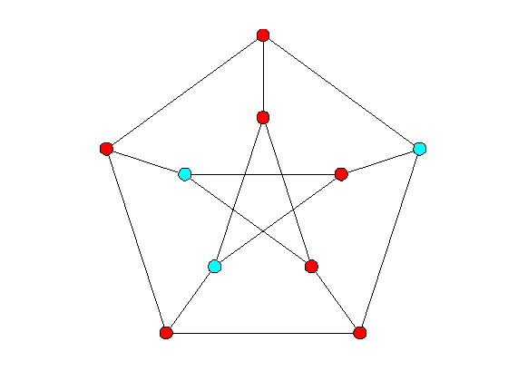
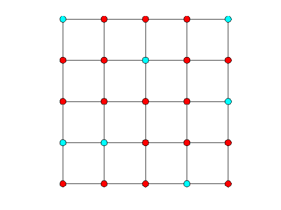

Domination in graphs
We demonstrate how to find a minimum dominating set in a graph. This requires Matlab's Optimization Toolbox. We illustrate this using Petersen's graph and a grid graph.
Contents
Petersen's graph example
g = graph;
petersen(g);
[d,S]=dom(g);
disp(['The domination number of the Petersen graph is ', int2str(d)])
notS = setdiff(1:nv(g), S);
p = partition({S,notS});
clf;cdraw(g,p)
Optimization terminated. The domination number of the Petersen graph is 3
Grid graph example
grid(g,5,5);
[d,S]=dom(g);
disp(['The domination number of the 5-by-5 grid is ', int2str(d)])
notS = setdiff(1:nv(g), S);
p = partition({S,notS});
clf;cdraw(g,p)
Optimization terminated. The domination number of the 5-by-5 grid is 7
Release storage
free(g)